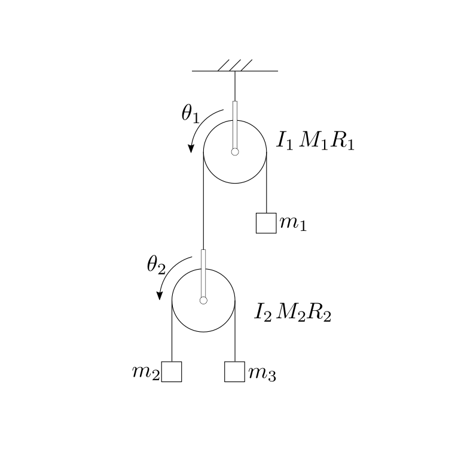
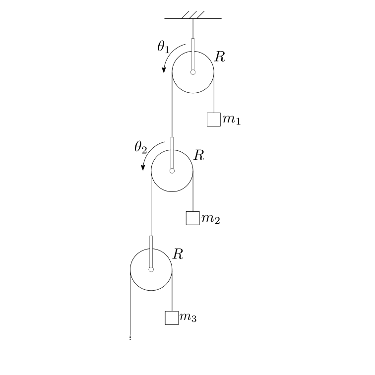

12.11. Altri problemi#
Determinare le equazioni del moto, e determinare la direzione di rotazione delle due carrucole. Dopo aver trovato l’espressione letterale, determinare la direzione con \(m_1 = 17 \, \text{kg}\), \(m_2 = 100 \, \text{kg}\) \(m_3 = 4 \, \text{kg}\).

Equazioni del moto - con bilanci meccanici («meccanica di Newton») - Approccio 1
Le equazioni pure del moto - cioé senza reazioni vincolari, o azioni interne - possono essere ricavate a partire dal:
bilancio del momento della quantità di moto del sottosistema carrucola 1 + massa \(m_1\) rispetto al centro della carrucola. Su questo sottosistema agiscono come forze esterne la forza peso, la reazione vincolare a terra e la tensione \(T\) nel filo che sostiene la carrucola 2, e che viene «tagliato» per ottenere il sottosistema
bilancio del momento della quantità di moto del sottosistema carrucola 2 + massa \(m_2\) + massa \(m_3\) rispetto al centro della carrucola. Su questo secondo sistema agiscono come forze esterne la forza peso, e la tensione \(T\) nel filo che sostiene la carrucola 2
bilancio della quantità di moto del sottosistema carrucola 2 + massa \(m_2\) + massa \(m_3\) rispetto al centro della carrucola
In queste 3 equazioni compaiono i due gradi di libertà \(\theta_1\), \(\theta_2\) e la azione interna \(T\) del filo. Queste tre equazioni sono:
La seconda equazione è un’equazione pura del moto, non contenendo azioni interne o reazioni. Combinando la prima e la terza equazione, si può eliminare la dipendenza da \(T\) (che poi può essere ricavata, una volta calcolata la dinamica del moto), per ottenere
Usando il formalismo matriciale, questa equazione e l’equazione di bilancio del momento della quantità di moto del secondo sottosistema sono una coppia di equazioni pure del moto
Equazioni del moto - con bilanci meccanici («meccanica di Newton») - Approccio 2
…scrivendo le equazioni di bilancio del momento della quantità di moto per:
il sottosistema 2 (come prima)
tutto il sistema (sottosistema 1 + sottosistema 2) rispetto al centro della carrucola 1
si ottiene direttamente una coppia di equazioni pure del moto. La seconda equazione consiste al procedimento fatto in precedenza di eliminazione della tensione \(T\) nel filo mettendo insieme l’equazione 1 e 3.
Equazioni del moto - con equazioni di Lagrange
Questo approccio richiede la conoscenza della meccanica lagrangiana, che non rientra nel programma di scuola superiore. Per riferimenti, Physics-Mechanics:Lagrangian Mechanics.
Il sistema ha due gradi di libertà. Qui si scelgono gli angoli di rotazione delle carrucole \(\theta_1\), \(\theta_2\) come gradi di libertà indipendenti. Le equazioni di Lagrange (del secondo tipo)
forniscono le equazioni pure del moto, dove \(\mathscr{L}\) indica la lagrangiana del sistema, \(\mathscr{L} = K + U\), somma dell’energia cinetica e del potenziale (opposto dell’energia potenziale, anche se questa definizione viene contestata da qualcuno. Se siete tra questi, scrivete \(\mathscr{L} = K - V\) che passa la paura e la polemica, e passate oltre). L’energia cinetica e il potenziale del problema sono rispettivamente
Inserendo le espressioni di energia cinetica e potenziale nelle equazioni di Lagrange, si trovano le equazioni pure del moto del sistema
Accelerazione
Invertendo la matrice dei coefficienti costanti che moltiplica il vettore delle accelerazioni \(\ddot{\theta}_k\), si ottiene l’espressione esplicita delle accelerazioni in funzione delle caratteristiche del sistema e della accelerazione di gravità \(g\),
e quindi
Assumendo trascurabile l’inerzia delle carrucole rispetto a quella dei pesi, \(M_k = 0\), \(I_k = 0\),
e quindi
Poiché il determinante della matrice \(\mathbf{M}\) è positivo - matrice di massa, in equazioni pure del moto senza vincoli algebrici…, vedi qui - il segno delle accelerazioni è determinato unicamente dal segno degli elementi del vettore. Quindi:
l’accelerazione della carrucola \(2\) è positiva (in senso anti-orario, per le convenzioni scelte) se \(m_2 > m_3\)
l’accelerazione della carrucola \(1\) è positiva (sempre in senso anti-orario, per le convenzioni scelte) se \(4 m_2 m_3 > m_1 (m_2 + m_3)\)
Nel caso particolare in cui \(m_1 = 17 \, \text{kg}\), \(m_2 = 100 \, \text{kg}\) \(m_3 = 4 \, \text{kg}\), l’accelerazione delle due carrucole è
Moto del sistema
L’integrazione delle equazioni di moto è banale, poiché le accelerazioni sono costanti. Indicando le accelerazioni costanti con \(\alpha_1\) e \(\alpha_2\), la legge del moto degli angoli delle carrucole è
con \(\Omega_{k,0}\) e \(\theta_{k,0}\) rispettivamente la velocità e la posizione all’istante iniziale, da determinare con due condizioni (qui non fornite): se si ipotizza che il sistema si trovi inizialmente in quite e l’angolo iniziale sia il riferimento nullo, allora

Soluzione - Approccio 1. - Altezze masse come coordinate libere
Relazione ricorsiva come equazione alle differenze
Il bilancio del momento della quantità di moto dell”\(n\)-esima carrucola e il bilancio della quantità di moto dell”\(n\)-esima massa sono
con \(T_{n,n+1}\) la tensione nei fili che collegano l”\(n\)-esima carrucola alla \(n+1\)-esima carrucola e l”\(n\)-esima carrucola alla \(n\)-esima massa, e \(\ddot{y}_n\) l’accelerazione della \(n\)-esima massa.
Usando la seconda equazione per ricavare un’espressione delle tensioni in funzione dell’accelerazione, si può usare la prima equazione per ricavare una relazione ricorsiva
che si può interpretare come un”equazione alle differenze per l’incognita \(y_n\), \(n \ge 1\).
La soluzione generica di qusto problema - al netto di una costante arbitraria \(c\) - ha la forma
Vincolo sulla prima carrucola come condizione iniziale dell’equazione alle differenze
Condizione iniziale. Per risolvere il problema, ora serve una condizione iniziale - o per un qualsiasi indice \(k\) - per determinare \(\ddot{y}_n\). Per fare questo, è necessario tradurre la condizione di centro fisso della prima carrucola, \(\ddot{y}_1^c = 0\), in termini di spostamento delle masse. L’accelerazione dei centri di due carrucole vicine è legata dalla relazione
Questa equazioni vale per ogni coppia di carrucole e si può quindi scrivere in formato matriciale come
la cui relazione inversa vale - verificare come esercizio -
Usando l’espressione dell’accelerazione della prima carrucola in funzione delle accelerazioni delle masse per applicare il vincolo
per trovare il valore della costante di integrazione \(c = 3 g\).
Risultati
Risultano quindi note:
le accelerazioni delle masse
\[\ddot{y}_n = g \left( - \frac{1}{2} + \frac{3}{2^n} \right) \ ;\]le accelerazioni dei centri delle carrucole
\[\begin{split}\begin{aligned} \ddot{y}^c_n & = \frac{1}{2} \ddot{y}_n + \frac{1}{2^2} \ddot{y}_{n+1} + \frac{1}{2^3} \ddot{y}_{n+2} + \dots = \\ & = \frac{1}{2} \sum_{k=0}^{+\infty} \frac{1}{2^k} \ddot{y}_{n+k} = \\ & = \frac{g}{2} \sum_{k=0}^{+\infty} \frac{1}{2^k} \left( - \frac{1}{2} + 3 \frac{1}{2^{n+k}} \right) = \\ & = - \frac{g}{4} \sum_{k=0}^{+\infty} \frac{1}{2^k} + \frac{3}{2^{n+1}} g \sum_{k=0}^{+\infty} \frac{1}{4^k} = \\ & = - \frac{g}{4} \cdot 2 + \frac{3}{2^{n+1}} g \cdot \frac{4}{3} = \\ & = \left( - \frac{1}{2} + \frac{1}{2^{n-1}} \right) g \ . \end{aligned}\end{split}\]le accelerazioni angolari delle carrucole \(R \ddot{\theta}_n = \ddot{y}^c_{n} - \ddot{y}^c_{n+1}\)
\[\begin{split}\begin{aligned} \ddot{\theta}_n & = \left( -\frac{1}{2} + \frac{1}{2^{n-1}} \right) g - \left( -\frac{1}{2} + \frac{1}{2^{n}} \right) g = \\ & = \frac{1}{2^n} g \ . \end{aligned}\end{split}\]
Soluzione - Approccio 2. - Angoli di rotazione come coordinate libere
Si studia prima un sistema formato da \(n\) carrucole, e poi si fa tendere \(n \rightarrow + \infty\). Si trova quindi il risultato, dopo essersi accorti che il contributo della massa \(M\) tende a un contributo nullo per il numero di carrucole che tende all’infinito.
Per il sistema formato dalla prima carrucola, dalla prima massa e dal filo, separato dal resto del sistema prima di collegarsi alla seconda carrucola, il bilancio del momento della quantità di moto
Si può quindi scrivere la tensione \(T_{12} = m_1 ( g + R \ddot{\theta}_1 )\).
Per la seconda carrucola, il bilancio della quantità di moto e del momento della quantità di moto
Si trova la tensione \(T_{23} = \frac{1}{2} T_{12}\).
Per la terza carrucola, il bilancio della quantità di moto e del momento della quantità di moto
Si trova la tensione \(T_{34} = \frac{1}{2} T_{23} = \frac{1}{2^2} T_{12}\).
Per la \(n\)-esima carrucola, con una massa \(M\) collegata all’altro estremo invece di un’ulteriore carrucola,
la tensione del filo che sostiene le due masse \(m_n\) e \(M\) è \(T_{n} = \frac{1}{2} T_{n-1,n} = \dots = \frac{1}{2^{n-1}} T_{12}\),
le equazioni di bilancio della quantità di moto delle due masse sono
\[\begin{split}\begin{aligned} & M R \left( - \sum_{k=1}^{n-1} \ddot{\theta}_k - \ddot{\theta}_n \right) = T_{n} - M g \\ & m R \left( - \sum_{k=1}^{n-1} \ddot{\theta}_k + \ddot{\theta}_n \right) = T_{n} - m g \\ \end{aligned}\end{split}\]
Sostituendo l’espressione delle tensioni nelle equazioni di bilancio dei momenti delle quantità di moto delle singole carrucole, si trova un sistema di equazioni pure del moto - cioè nelle quali non compaiono reazioni vincolari:
Sottraendo le ultime due equazioni - dopo aver diviso per le rispettive masse -, si può ricavare l’espressione di \(\ddot{\theta}_n\) in funzione di \(T_n\) (e quindi in funzione di \(\ddot{\theta}_1\))
Sottraendo la penultima dalla terzultima equazione,
e quindi
Continuando con lo stesso procedimento,
si trova \(\ddot{\theta}_{n-2}\)
e le accelerazioni successive
Dall’espressione per l’accelerazione generica, si può calcolare l’espressione di \(\ddot{\theta}_2\), usando \(k = n-2\)
con
Al limite \(n \rightarrow + \infty\), la somma tende a \(S_{1/4} = \frac{4}{3}\), e l’accelerazione della seconda carrucola a \(\ddot{\theta}_2 \rightarrow \frac{1}{8} \frac{4}{3} \left( \frac{g}{R} + \ddot{\theta}_1 \right) = \frac{1}{6} \left( \frac{g}{R} + \ddot{\theta}_1 \right)\). Inserendo questa espressione nella prima equazione, si ottiene un’equazione in \(\ddot{\theta}_1\)
e quindi, l’accelerazione della prima carrucola - nel limite di un numero infinito di carrucole - vale
L’accelerazione della sceonda carrucola vale
L’accelearazione della terza carrucola - verificare, usando la formula generica di \(\ddot{\theta}_{n-k}\) - vale
e l’accelerazione dell”\(k\)-esima carrucola vale
Soluzione - Approccio 2.
La massa equivalente è definita come…
Soluzione
<!--
````{only} latex
% Esercizio *****************************************************************
$$
\begin{minipage}[t]{.55\textwidth}
\vspace{0pt}
\textbf{Problema 1.}
Una palla di massa $m$ si trova inizialmente in quiete rispetto a un'osservatore inerziale, a una quota $h$ sopra la superficie terrestre.
La palla viene lasciata cadere dalla condizione di quiete. Viene chiesto di determinare:
1. la velocità di impatto con il terreno
2. il tempo impiegato per raggiungere il terreno.
Viene chiesto di svolgere i conti trascurando la resistenza dell'aria. Si chiede poi di:
3. confrontare i risultati ottenuti con i risultati per un corpo di massa $M > m$
4. confrontare i risultati ottenuti con i risultati che si otterrebbero nei pressi della superficie lunare.
Raggio Terra: $R_E = 6380 \, km$ ; massa Terra: $M_E = 5.98 \cdot 10^{24} \, kg$;
Raggio Luna: $R_M = 1740 \, km$ ; massa Luna: $M_M = 7.34 \cdot 10^{22} \, kg$;
\end{minipage}
\hspace{.05\textwidth}
\begin{minipage}[t]{.40\textwidth}
\vspace{0pt}
\includegraphics[width=.95\textwidth]{../../media/dynamics/free-fall.png}
\end{minipage}
$$
**Soluzione.**
**Accelerazione nei pressi della superficie di un pianeta.** L'accelerazione di gravità nei pressi della superficie di un pianeta è data dalla formula **todo** *ref*
–>